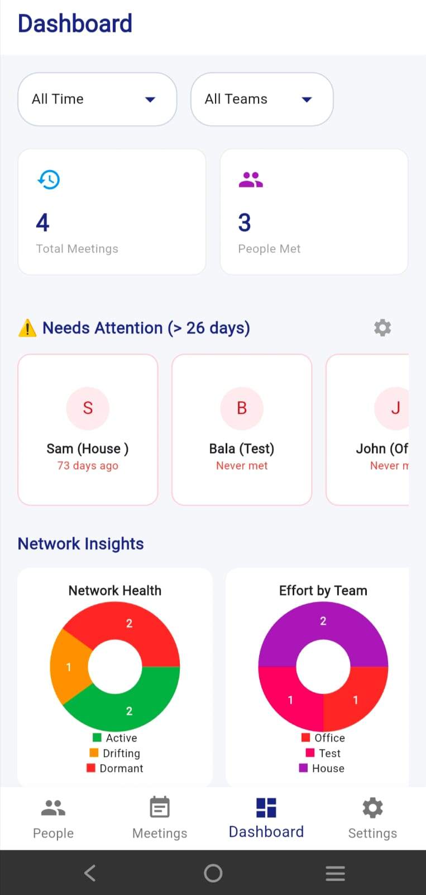

One On One Tracker
Never lose track of a 1-on-1 again.
One On One Tracker is a meeting-history app for managers, mentors and professionals. It keeps meeting notes, contact profiles and follow-up action items together in one searchable place on your phone.
Also known as: OneOnOneTracker.
- Centralized meeting logs for summaries and takeaways
- Relationship manager with a profile for each person
- Follow-up tracking with action items
- Smart search and filters, rich-text notes and optional Google Drive backup


More screenshots


Key facts
- Platforms
- iPhone (iOS 13 or later) and Android
- Price
- Free, with a one-time Lifetime Pro upgrade
- Category
- Productivity
- Sign-in
- Google or Apple
- Backup
- Optional Google Drive backup and sync (included in Pro)
- Age rating (App Store)
- 4+
Frequently asked questions
Where are my meeting notes stored?
On your device. If you turn on Google Drive backup, a private backup file is kept in your own Google Drive.
What does the Google Drive backup access?
Only a private app-data folder. The app cannot see any other files in your Google Drive.
Is there a subscription?
No. The app is free, with an optional one-time Lifetime Pro purchase.
How do I delete my data?
Delete records or clear local data in the app settings. To delete your account and data from our systems, use the request form in the privacy policy.
Guides: How to run and document a 1-on-1 meeting
More help: One On One Tracker support · Privacy policy · Terms of service